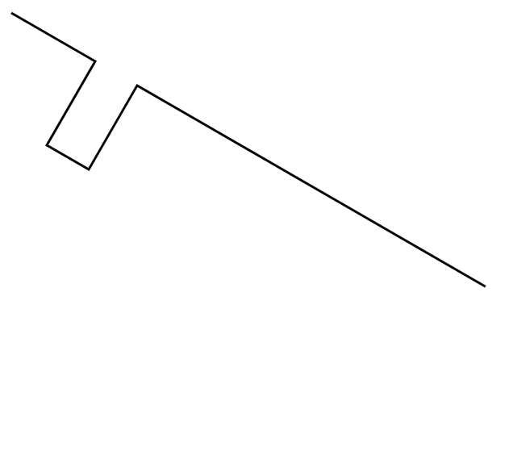
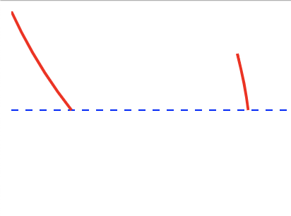

Path Transforms¶
join¶
the join transform will join all segments into a continuous path. It will make a best effort to rearrange segments to make the smoothest path. For breaks in paths, the segments are extended until they meet.
Attributes
close_path:trueshould the final segment be extended tothe meet the beginning of the path?
false
"transforms" : [
{
"type" : "join",
"close_path" : false
}
]
mirror¶
Mirror will flip the path on either the horizontal or vertical axis
axis:horizontalwill rotate around a horizontal line. Note that this meansthe bottom of the shape will become the top.
verticalrotate around a vertical line. This means theleft of the shape will become the right
handle: Defines where on the shape the axis should pass through
"transforms" : [
{
"type" : "mirror",
"axis" : "horizontal",
"handle" : "$TOP_LEFT"
}
]
rotate¶
rotate will rotate by the specified amount
degrees: amount to rotate in degreesaxis: The axis point. This will be one of the HANDLE constants. Default is$TOP_LEFT
"transforms" : [
{
"type" : "rotate",
"degrees" : 30
}
]
BEFORE:
{kind=link}
AFTER:
{kind=link}
scale¶
Scale will shrink or expand the path
width: Will scale to the requested width. ifheightis not provided then the scalingwill be proportional
height: Will scale to the requested height. ifwidthis not provided then the scalingwill be proportional
scale_x: Percentage to scale in the x direction, where 1 is no change, and .5 would be 50%scale_y: Percentage to scale in the y direction, where 1 is no change, and .5 would be 50%
"transforms" : [
{
"type" : "scale",
"width" : 2.1
}
]
slice¶
Slice will slice the component horizontally at the requested Y value and discard everything below that.
y: The Y value to remove all segments below this line.(Note below here means with a Y value > y, but appears below)
"transforms" : [
{
"type" : "slice",
"y" : 119
}
]
BEFORE:
{kind=link}
AFTER:
{kind=link}
trim¶
trim will remove any surrounding whitespace and move the bounding box of the path to 0,0
cleanup¶
Some basic path cleanup, the rendered path should not change in any way. This will remove redundant Move operations and some other tasks